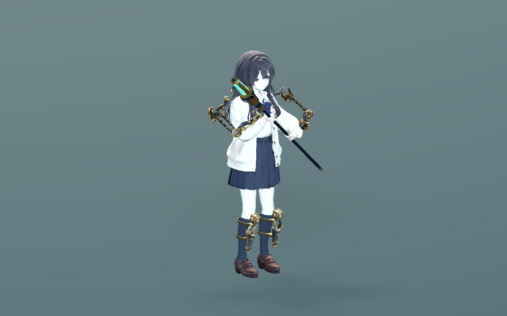
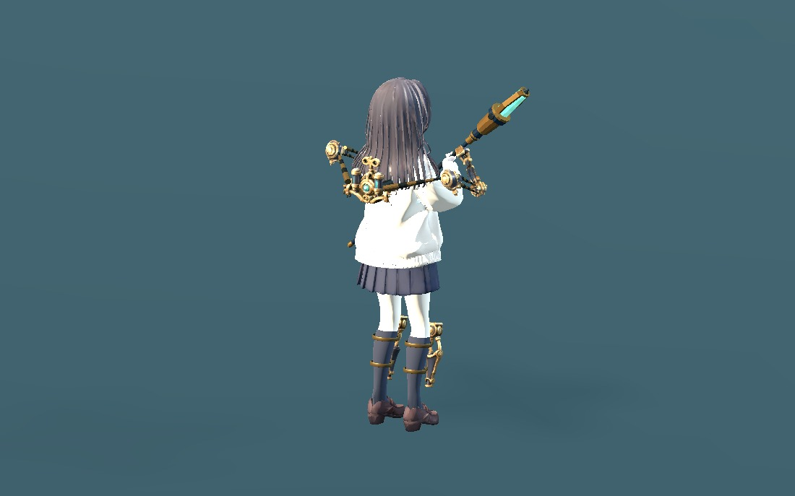
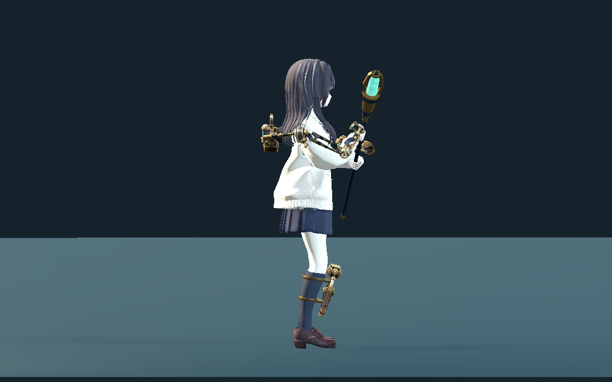
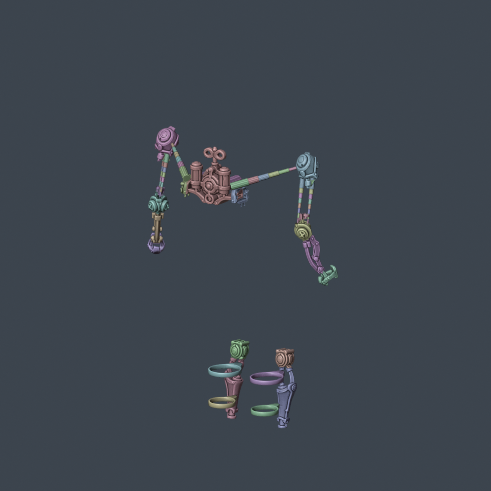
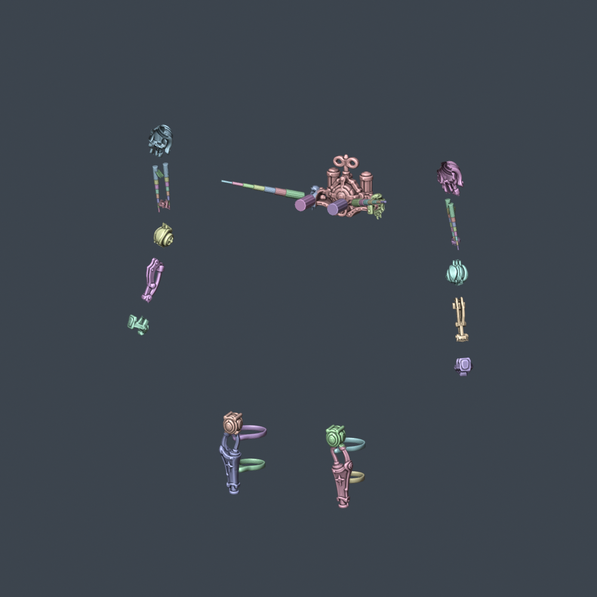
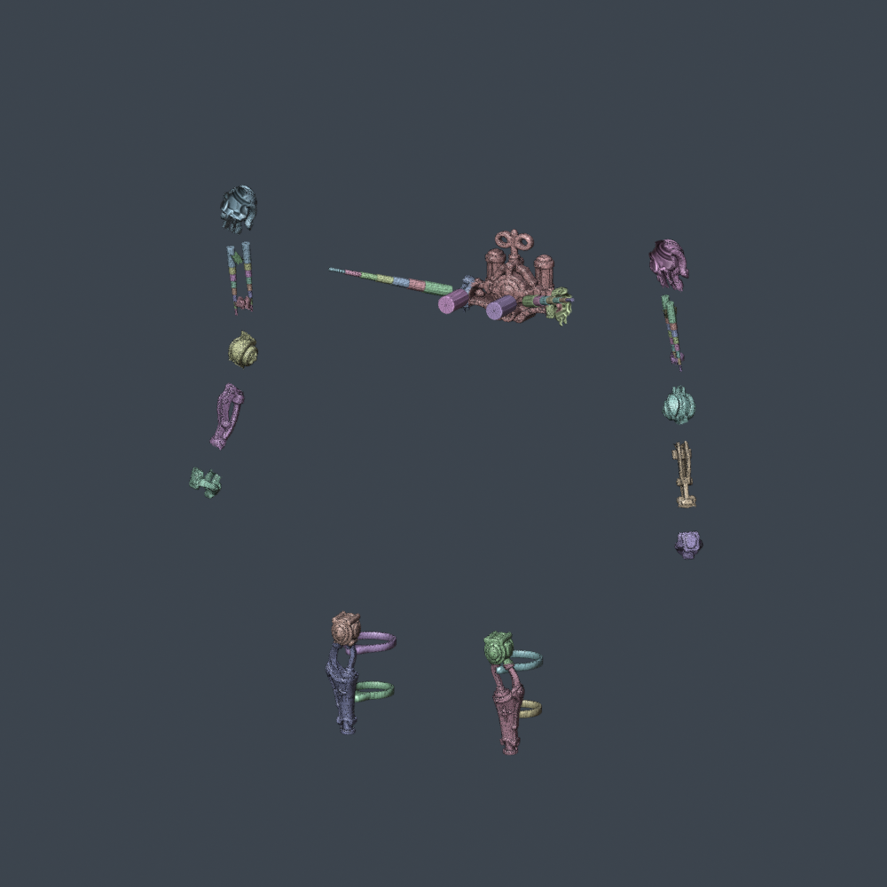

WITCH / EQUIPMENT FIT 04
소매·케이프 여유와 종아리 고정
어깨 덮개가 팔의 비틀림을 그대로 따라 돌지 않도록 바꾸고, 위팔 연결대는 중첩 금속 부품으로 교체했습니다. 공격 중에는 외골격 관절이 옷 바깥으로 돌아가며, 종아리에는 몸에 맞춘 고정 밴드와 보호대 연결부가 붙습니다.
55개 강체 부품 · 56개 보조 본79,049 삼각형평상복 / 변신복 · 8개 모션원본 캐릭터·모션 보존

앞쪽 — 소매·손목과 종아리 고정
뒤쪽 — 케이프와 어깨 연결대동일한 캐릭터 클립·카메라·조명으로 비교합니다. 버전을 바꾸어도 현재 모션 위치를 유지합니다. 이 화면은 장착 자산 검토이며 신규 스킬 발동은 아직 연결하지 않았습니다.
고정 방식

종아리 둘레를 따르는 위·아래 밴드. 보호대 아래쪽은 발목과 부츠의 움직임을 위해 짧게 조정했습니다.
부품 식별색. 어깨에는 회전 보정, 위팔에는 8단 연결대, 등에는 기존 7단 연결대를 사용합니다.- 평상복은 외골격 착용용 복사본에서 손목 주변만 최대 22mm 모았습니다. 기존 교복 파일은 그대로입니다.
- 변신복은 원본 GLB를 그대로 사용합니다. 케이프 모양을 깎지 않고 장비 쪽 피팅과 공격 관절 보정으로 여유를 확보합니다.
- 금속은 한 본에 100% 가중치이며 스케일 애니메이션 없이 회전·이동합니다. 기존 본체의 지팡이 그립과 동작은 바꾸지 않았습니다.
실제 표시 크기
1280×800, 선택된 1.75배 기준. 그림을 CSS로 줄이지 않았으며 좁은 창에서는 가로로 스크롤됩니다.
부품과 메시 보기

원본 위팔의 양 끝은 유지하고 가운데를 중첩 연결대로 교체했습니다. 이전 메시 전체는 숨긴 보관 컬렉션에 있습니다.
유지한 원본 73,673개 면의 UV·피팅 계보 확인. 새 수작업 리토폴로지나 최종 경량화 결과는 아닙니다.검사 범위와 다음 작업
현재 의상 교차 표본은 0 / 400입니다. 위의 모션별 기록과 전체 검사 기록을 함께 확인할 수 있습니다. 별도의 800개 촘촘한 표본 검사에서는 0개 자세에 교차가 검출됐습니다. 교차 면 수는 관통 깊이나 화면 가시 면적과 다릅니다.
관절 보정은 현재 휘두르기·찌르기·캐스팅·쓰러짐 클립에 맞춘 장비용 키입니다. 임의 새 모션과 중단·블렌드에는 추가 검토가 필요합니다. 머리카락·맨몸·지면·부품 사이의 실시간 충돌, 정확한 손목 접촉과 최종 성능 예산은 이번 검사의 범위 밖입니다.
Blender에는 본체·외골격·헤어가 함께 재생되는 8개 모션 목록을 저장했습니다. 원래 캐릭터의 107개 본, 모션 파일, 게임 스크립트와 이전 v2/v3 자산은 보존했습니다.